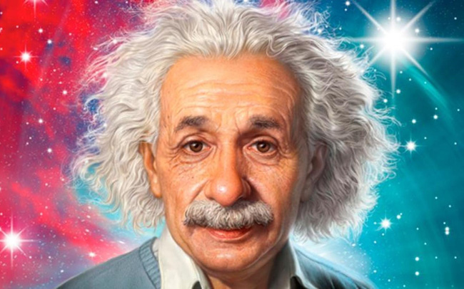

Albert Einstein
un physicien théoricien

Le cerveau d'Einstein était exceptionnel, dixit une nouvelle étude
- Né le 14 mars 1879 à Ulm
- Mort le 18 avril 1955 à Princeton
- 1901 , il a publié son premier article scientifique dans les Annalen der Physik, article consacré à ses recherches sur la capillarité.
- À la fin de l’année 1902 , naît le premier de ses enfants
- 1905 Il a publié sa théorie de la relativité restreinte
- 1909 , Albert Einstein est reconnu par ses pairs, en particulier Planck et Nernst, qui souhaitent l’inviter à l’université de Berlin.
- 1913 il devient membre de l’Académie des sciences de Prusse
- 1914, il déménage en Allemagne et habite à Berlin de nombreuses années
- 1915 Il a publié sa théorie de la gravitation, dite relativité générale
- En 1916, il publie un livre présentant sa théorie de la gravitation, connue aujourd’hui sous le nom de relativité générale.
- Il contribue largement au développement de la mécanique quantique et de la cosmologie
- Reçoit le prix Nobel de physique de 1921 pour son explication de l’effet photoélectrique
- Son travail est notamment connu du grand public pour l’équation E=mc2, qui établit une équivalence entre la masse et l’énergie d’un système.
- Il est aujourd'hui considéré comme l'un des plus grands scientifiques de l'histoire, et sa renommée dépasse largement le milieu scientifique.
“La possession de merveilleux moyens de production n’a pas apporté la liberté, mais le souci et la famine.”
Plus d’informations cliquer sur : wikipedia